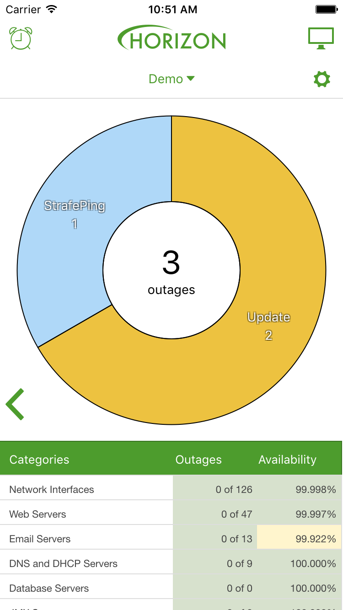
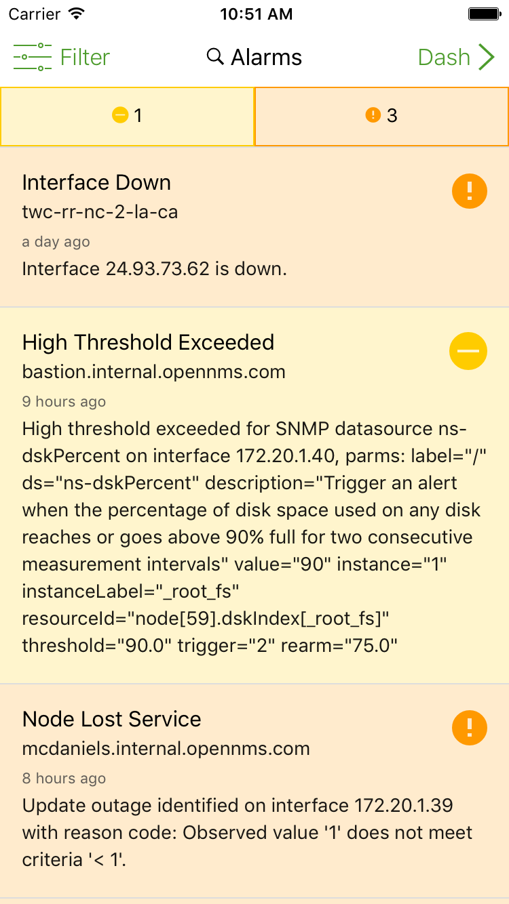

About OpenNMS® Compass
OpenNMS Compass is a modern mobile interface for iOS and Android.
It provides a simple dashboard for viewing Outage and Alarm data, node details, and more.
Features


Outage and Alarm Dashboard
At a glance, you can see a summary of any current outages and services with pending problems. One tap will take you to a more detailed view of outages or alarms.
On supported systems*, surveillance categories are also displayed, giving you quick access to availability just like your OpenNMS® Horizon™ or OpenNMS® Meridian™ server UI.


Alarm Details
You can view your current alarms, as well as acknowledge, escalate, and clear them, right from
the list, or from the alarm's details.

Node Details
View detailed information on your nodes, including SNMP attributes, address, availability information*, and outages.
If you are running the latest OpenNMS® Horizon™ or OpenNMS® Meridian™ release*, you can even update the geolocation of a node with the push of a button.
Getting Help with OpenNMS Compass
There are a couple of ways to get help with OpenNMS Compass:
* Note: Some features are only available on OpenNMS® Horizon™ 15.0.2 or OpenNMS® Meridian™ 2015 or higher.